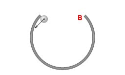
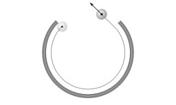
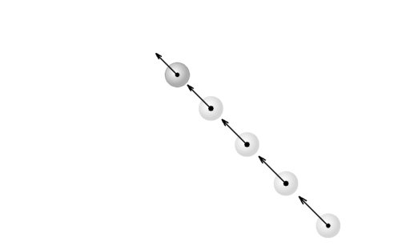
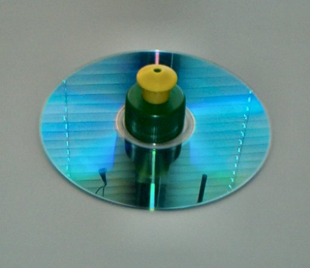
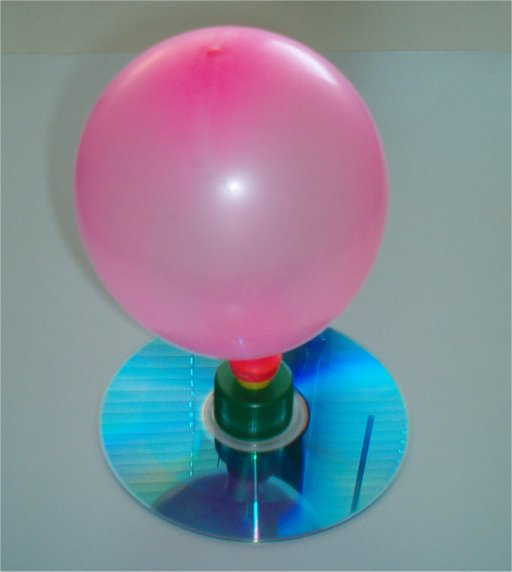
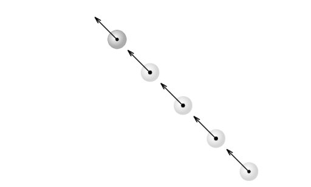
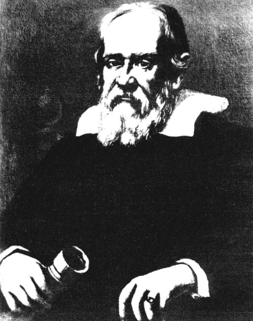
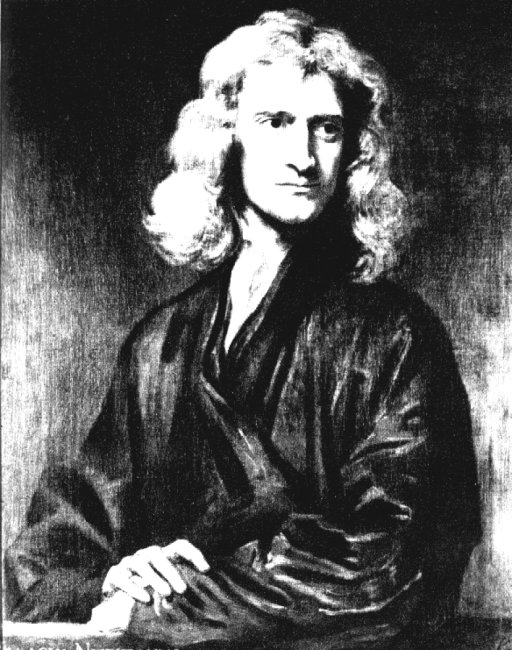

- Fig. 1
- Bila este lansată în interiorul buclei.
|

- Fig. 2
- Traseul centrului bilei.
|

- Fig. 3
- Datorită interacţiunii cu suprafaţa mesei pe care se rostogoleşte, centrul bilei se mişcă din ce în ce mai încet.
|

- Fig. 4
- Dopul lipit pe CD.
|

- Fig. 5
- Aeroglisorul alunecând pe o pernă de aer.
 « Simulare interactivă
« Simulare interactivă
|

- Fig. 6
- În lipsa interacţiunilor, orientarea şi mărimea vitezei rămân nemodificate!
|
(1564-1642)'); return false" >
- Fig. 7
- Galileo Galilei
(1564-1642)
|
(1642-1727)'); return false" >
- Fig. 8
- Isaac Newton
(1642-1727)
|